| 日付 | 2023年2月26日（日） |
|---|---|
| 山域 | 阿武隈周辺 |
| メンバー | 家族（妻） |
| 山行形態 | 日帰り |
| アクセス | 車 |
| ルート (Map) | 大川戸駐車場 (9:04) - (9:42) 足尾山 - (9:53) 御嶽山 - (10:11) 峠 - (10:53) 雨巻山 (11:43) - (12:26) 三登谷山 - (12:58) 大川戸駐車場 |
筑波山の北の方に雨巻山という山がある。
都心からは遠いが、そこそこ名の知れた人気の山らしいので、行ってみることにする。
花粉の季節になってきたので、今回は子供たちはお休みだ。
大川戸駐車場に到着。標高180m。
さすがに人気の山で、多くの車が停まっている。
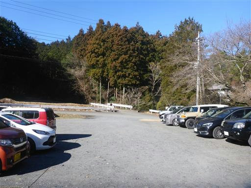
世界遺産ではなく「世間遺産」。
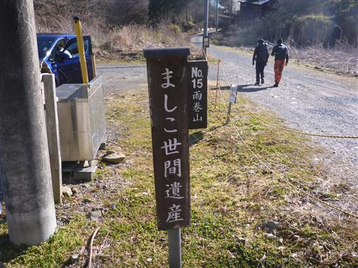
登山口付近には茶屋もある。

登山開始。
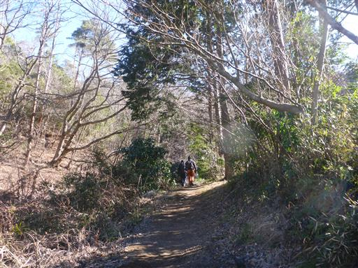
立派な石碑。何が書かれているのかはよく分からない。
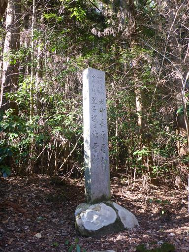
最初は沢沿いの道だ。
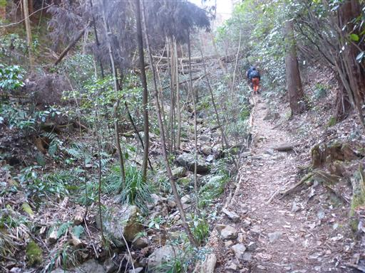
一箇所、沢の中を歩く箇所もある。
沢登り気分を味わえるが、水はほとんど流れていない。
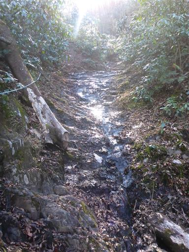
稜線に到達すると尾根歩き。
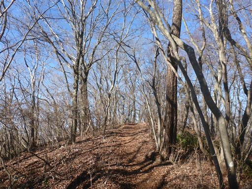
足尾山に到着。
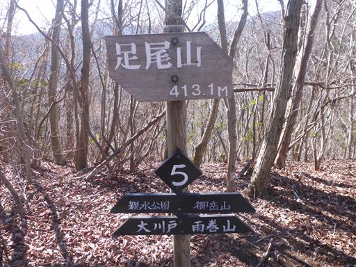
ここから先も尾根道が続く。
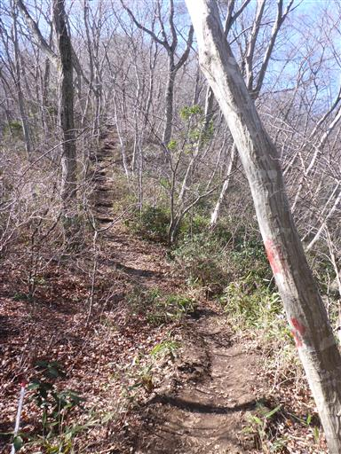
一旦下って御嶽山への登りは鎖場だ。
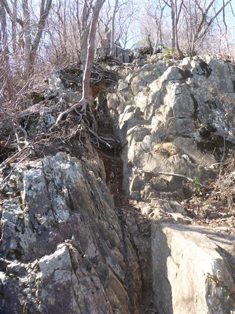
鎖場を登りきると御嶽山に到着する。

山頂からは素晴らしい展望が広がる。
左手遠くに見えるのは八溝山だろうか？
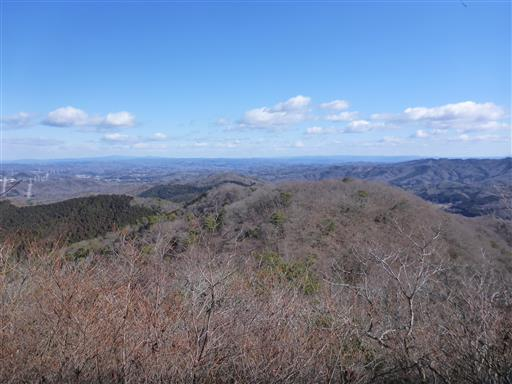
ここから雨巻山までは長い尾根歩き。
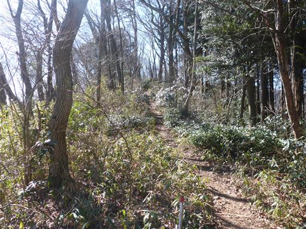
峠を通過する。特に名前のない峠のようだ。
ところどころで駐車場に通じる大川戸への下山道のルートが現れる。
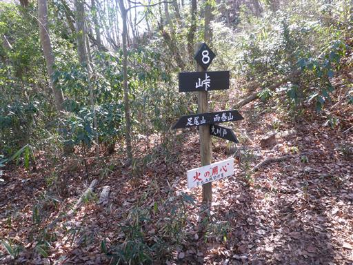
猪ころげ坂の標識。達筆だ。
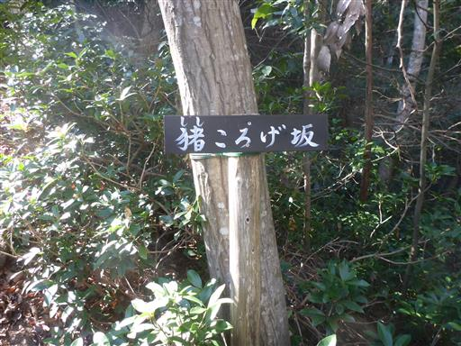
急な斜面ではあるが、登山道はジグザグに付けられているため、登りにくくはない。
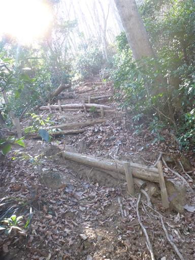
快適な尾根歩きを続けると山頂が見えてくる。
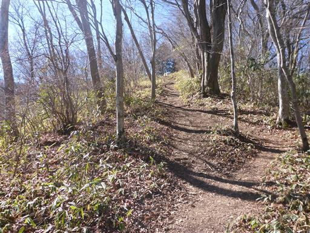
雨巻山山頂に到着。標高533m。
2時間の登りで、ちょうど良い運動だ。

山頂からは一方向のみ展望が広がる。
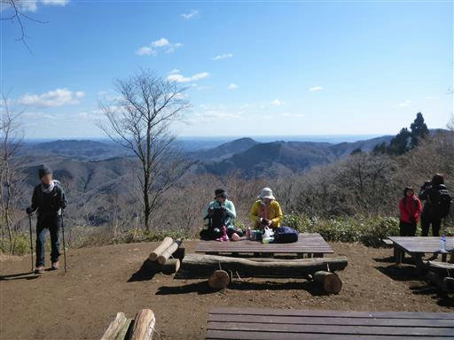
展望塔の標識があったので、まずはそちらに向かってみる。
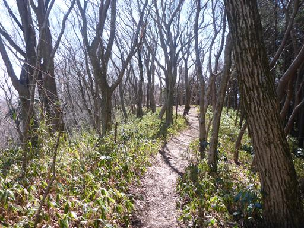
展望塔に到着。思っていたのと異なり、あまり展望はよくなさそうだ。
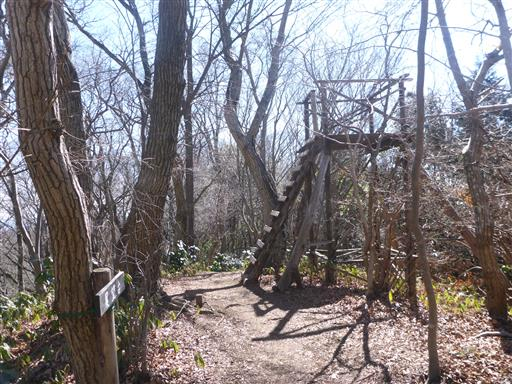
展望塔に登ってみると、わずかな切り開きから富士山が望める。
大展望ではなく、富士山の展望ポイントのようだ。
富士山まではかなりの距離があるため、快晴の本日でも微かに見える程度だ。
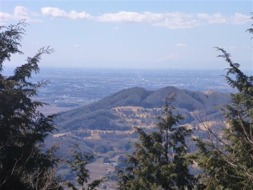
雨巻山に戻ってきたらベンチに腰掛けて昼食をとる。
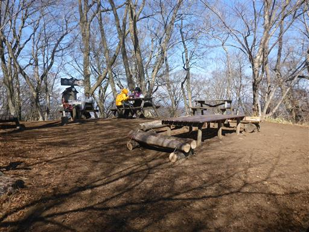
下山は登りとは別の周回コースを歩く。
この山は登山道がたくさんあるので、いろいろなコースを歩ける。
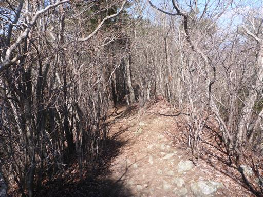
遠く見慣れない山が見える。山頂からは見えなかった山々だ。
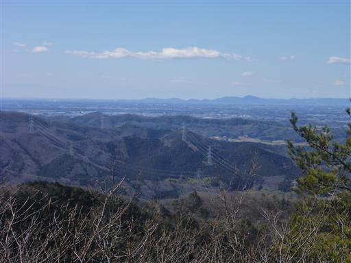
次の展望ポイントでは筑波山が望める。
筑波山から比較的近い山のはずだが、ここに来てようやく望むことができた。
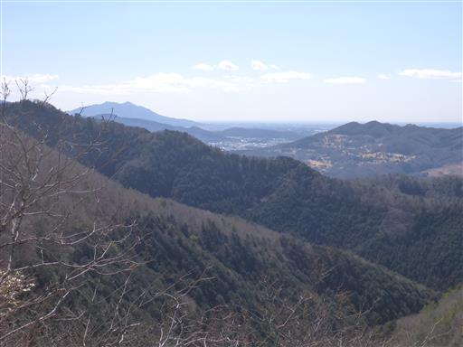
三登谷山頂に到着。ここが最後のピークだ。
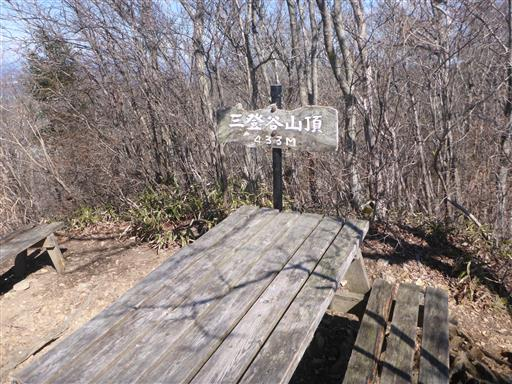
ここからは日光の山々が望める。
左から男体山、大真名子山、女峰山だ。
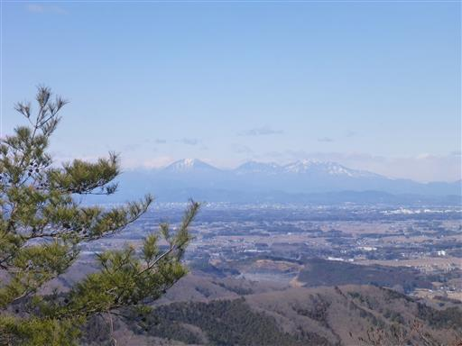
こちらは高原山。
この山はいくつかの展望ポイントがあり、それぞれで見える方向、景色が異なるのが面白い。

下山中にカラフルな色の石を発見。自然の石のようだ。
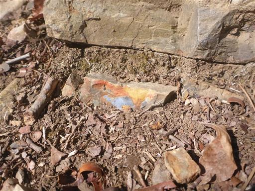
最後は杉の植林地帯になる。
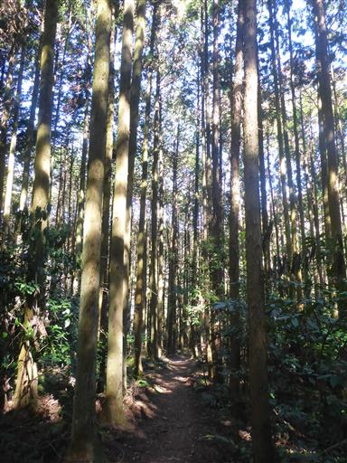
下山。
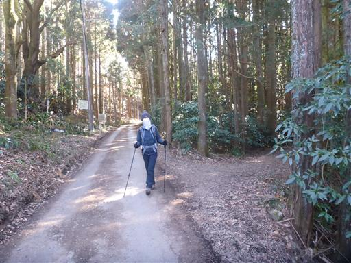
鮎供養之碑。近くに釣り堀があるからだろうか？
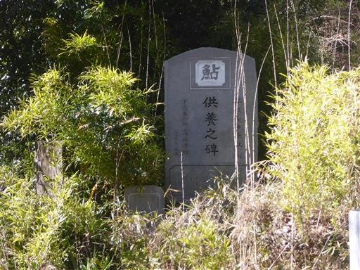
駐車場に戻ってくる。まだまだ入ってくる車があり。昼を過ぎても賑わっている。
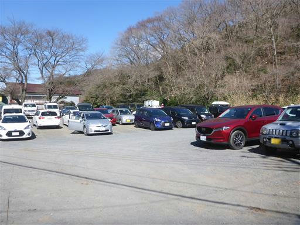
近くにロウバイが咲いていて、良い香りを放っている。
雨巻山は、整備された歩きやすい登山道、ほど良い長さ、
沢登り、岩登り、尾根歩き、所々の展望スポットがあり
なるほど、人気の山と言うのも頷ける楽しい山だった。
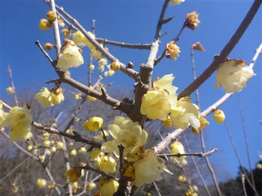